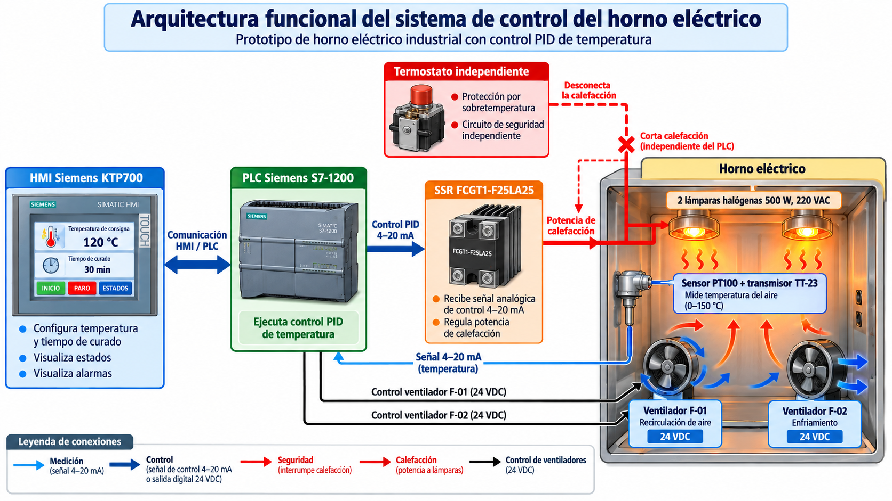

De la necesidad a una especificación verificable
En esta etapa organizamos qué debe hacer KOVAX y cómo se relacionan sus equipos. La SRS convierte la necesidad de curado de Kovati EIRL en requisitos identificables; la arquitectura asigna esas funciones a medición, control, actuación, supervisión y protección.
Especificación de diseño · Verificación prevista¿Para qué elaboramos la SRS?
Tras la elección del proyecto, necesitamos transformar una propuesta general —regular automáticamente el curado del barniz aislante en bobinados— en condiciones que orienten el diseño y puedan comprobarse. SRS significa especificación de requisitos del sistema: define funciones, calidad esperada, límites y métodos de verificación.
El horno actual depende de la regulación manual del operador. Para el prototipo proponemos una medición continua de la temperatura del aire, un lazo PID y una secuencia supervisada desde HMI. La documentación debe precisar cuándo se habilita la calefacción, cuándo empieza el tiempo de curado y qué ocurre ante una falla.
- Identificar la necesidad. Vincular regulación, tiempo y supervisión con el proceso de curado.
- Clasificar los requisitos. Separar funciones RF, calidad RNF y restricciones RT, conservando los códigos del informe.
- Asignar el diseño. Relacionar cada requisito con equipos, lógica, interfaces o documentos.
- Definir la evidencia. Establecer qué inspección, señal de prueba o registro permitirá comprobarlo.
Esta bitácora adapta las secciones de SRS, trazabilidad y arquitectura del informe LaTeX consolidado. Describe la base técnica de la semana 4; los métodos de prueba citados son actividades previstas y no representan ensayos aprobados en esta semana.
Los límites que guían el proyecto
0–150 °C
PT100 y transmisor de 4–20 mA para medir la temperatura del aire de la cámara.
130–140 °C · 2–4 h
Referencia de curado indicada por el informe para ROYALAC 158/4, sujeta a la ficha técnica aplicable del barniz.
2 × 500 W
Dos lámparas halógenas, potencia nominal total de 1000 W y alimentación de 220 VCA monofásica.
≈ 50 × 25 × 30 cm
Cámara prevista para un bobinado pequeño; dimensiones sujetas a la ingeniería de detalle.
El rango de medición de 0–150 °C y la consigna de curado de 130–140 °C tienen funciones distintas. El primero define el escalamiento del instrumento; la segunda corresponde al proceso previsto. Tampoco equivalen al umbral del termostato de protección, cuyo ajuste debe justificarse y verificarse por separado.
La PT100 mide el aire en su ubicación. Esa lectura, por sí sola, no acredita la temperatura del núcleo del bobinado, la uniformidad de toda la cámara ni la calidad final del curado. Estos aspectos requieren validación térmica y un procedimiento compatible con el barniz y la carga utilizados.
Explorar los 37 requisitos
Cada código conserva su correspondencia con el informe. Abre un requisito para consultar su especificación, el elemento de diseño relacionado y la verificación prevista. Los criterios todavía generales deberán convertirse en límites medibles antes de la aceptación del prototipo.
37 de 37 requisitos
Descargar matriz CSV ↓No hay requisitos que coincidan. Prueba otro término o cambia el tipo.
Funcionales 15
Las acciones que el sistema debe ejecutar: configurar, medir, regular, secuenciar y responder a fallas.
RF-01Configuración de consigna y tiempo
La HMI deberá permitir configurar la temperatura de consigna entre 130 y 140 °C y el tiempo de curado entre 120 y 240 minutos, de acuerdo con el proceso previsto.
- Elemento de diseño asociado
- Diseño de interfaz HMI y configuración de parámetros de operación.
- Verificación prevista
- Prueba de configuración HMI.
RF-02Inicio y parada del ciclo
El sistema deberá permitir iniciar y detener el ciclo mediante órdenes del operador, ejecutando las transiciones programadas.
- Elemento de diseño asociado
- Filosofía de control y secuencia de inicio y parada.
- Verificación prevista
- Prueba de operación.
RF-03Permisos de calentamiento
El calentamiento deberá permanecer deshabilitado cuando no se cumplan las condiciones de habilitación y seguridad establecidas.
- Elemento de diseño asociado
- Matriz de enclavamientos y condiciones de habilitación.
- Verificación prevista
- Prueba de enclavamientos.
RF-04Medición y escalamiento
El PLC deberá recibir y escalar la señal de 4–20 mA del transmisor PT100, correspondiente a una temperatura del aire de 0 a 150 °C.
- Elemento de diseño asociado
- Diagrama de lazo TT-23 y configuración de entrada analógica del PLC.
- Verificación prevista
- Prueba de escalamiento de 4–20 mA.
RF-05Regulación PID
El PLC Siemens S7-1200 deberá ejecutar un algoritmo PID convencional para regular automáticamente la temperatura del aire interior del horno.
- Elemento de diseño asociado
- Diseño del lazo de temperatura y programación del PID.
- Verificación prevista
- Prueba de regulación térmica.
RF-06Mando analógico de calefacción
El PLC deberá controlar las dos lámparas halógenas de 500 W mediante una señal analógica de 4–20 mA compatible con el SSR FCGT1-F25LA25.
- Elemento de diseño asociado
- Diagrama de control del SSR y configuración de salida analógica.
- Verificación prevista
- Prueba de regulación de calefacción.
RF-07Recirculación de aire
El ventilador F-01 de 24 VDC deberá realizar la recirculación del aire durante las etapas de operación establecidas.
- Elemento de diseño asociado
- Diagrama eléctrico y lógica de accionamiento del ventilador F-01.
- Verificación prevista
- Prueba de recirculación.
RF-08Enfriamiento
El ventilador F-02 de 24 VDC deberá accionarse según la secuencia de enfriamiento programada.
- Elemento de diseño asociado
- Diagrama eléctrico y lógica de accionamiento del ventilador F-02.
- Verificación prevista
- Prueba de enfriamiento.
RF-09Temporización del curado
El sistema deberá iniciar la temporización cuando la temperatura del aire medida por la PT100 alcance la consigna establecida. Al finalizar el tiempo programado, deberá desactivar la calefacción.
- Elemento de diseño asociado
- Secuencia de curado y programación del temporizador.
- Verificación prevista
- Prueba de temporización.
RF-10Visualización del proceso
La HMI Siemens KTP700 deberá mostrar la temperatura medida, la consigna, el tiempo y el estado del proceso.
- Elemento de diseño asociado
- Diseño de pantallas y variables HMI.
- Verificación prevista
- Prueba de visualización.
RF-11Avisos y alarmas
El sistema deberá indicar la finalización del ciclo y generar una alarma cuando se detecte una condición de sobretemperatura.
- Elemento de diseño asociado
- Configuración de avisos y alarmas del sistema.
- Verificación prevista
- Prueba de alarmas.
RF-12Protección por sobretemperatura
El termostato independiente deberá interrumpir la alimentación de calefacción cuando se alcance el límite de sobretemperatura establecido.
- Elemento de diseño asociado
- Circuito de protección por sobretemperatura y termostato.
- Verificación prevista
- Prueba de protección térmica.
RF-13Parada de emergencia
La parada de emergencia deberá interrumpir la calefacción mediante un circuito independiente del control PID.
- Elemento de diseño asociado
- Circuito de parada de emergencia independiente del control PID.
- Verificación prevista
- Prueba de emergencia.
RF-14Falla de medición
El sistema deberá detectar fallas identificables en la medición de temperatura, generar una condición de falla e impedir el calentamiento.
- Elemento de diseño asociado
- Lógica de diagnóstico de temperatura y respuesta ante fallas.
- Verificación prevista
- Simulación de falla de sensor.
RF-15Rearme y bloqueo de reinicio
El sistema deberá impedir el reinicio automático del calentamiento después de una emergencia o falla con bloqueo, requiriendo una nueva habilitación.
- Elemento de diseño asociado
- Lógica de bloqueo y procedimiento de rearme del sistema.
- Verificación prevista
- Prueba de reinicio seguro.
Desempeño y calidad 12
Las condiciones de estabilidad, confiabilidad, seguridad, mantenimiento y documentación.
RNF-01Estabilidad térmica
La temperatura deberá mantenerse estable respecto de la consigna, dentro de la tolerancia que se establezca durante el diseño y la validación térmica.
- Elemento de diseño asociado
- Criterios de estabilidad térmica y ajuste del controlador PID.
- Verificación prevista
- Registro de temperatura en régimen estable.
RNF-02Confiabilidad de la medición
La cadena de medición PT100, transmisor y entrada analógica deberá proporcionar lecturas confiables dentro del rango configurado de 0 a 150 °C.
- Elemento de diseño asociado
- Especificaciones de la PT100, transmisor y entrada analógica.
- Verificación prevista
- Comparación con instrumento de referencia.
RNF-03Respuesta y sobreimpulso
La respuesta del control PID deberá presentar un comportamiento estable, evitando oscilaciones y sobreimpulsos superiores a los límites de aceptación definidos.
- Elemento de diseño asociado
- Parámetros de sintonización PID y límites de respuesta térmica.
- Verificación prevista
- Prueba de respuesta y sobreimpulso.
RNF-04Claridad de la interfaz
La HMI Siemens KTP700 deberá presentar información clara y legible sobre temperatura, tiempo, estado operativo y alarmas.
- Elemento de diseño asociado
- Diseño de pantallas de supervisión HMI.
- Verificación prevista
- Inspección de interfaz.
RNF-05Comunicación PLC–HMI
La comunicación entre el PLC y la HMI deberá mantenerse estable durante los ciclos de prueba del prototipo.
- Elemento de diseño asociado
- Arquitectura y configuración de comunicación PLC–HMI.
- Verificación prevista
- Prueba de comunicación.
RNF-06Compatibilidad eléctrica
Los componentes de calefacción y regulación deberán ser compatibles con una alimentación monofásica de 220 VAC y una potencia nominal total de 1000 W.
- Elemento de diseño asociado
- Memoria de cálculo eléctrico y especificaciones de potencia.
- Verificación prevista
- Inspección y verificación de componentes.
RNF-07Aislamiento y superficies
La cámara deberá contar con aislamiento y protección térmica adecuados para limitar las pérdidas de calor y las temperaturas peligrosas en superficies accesibles.
- Elemento de diseño asociado
- Diseño térmico y especificaciones de aislamiento de la cámara.
- Verificación prevista
- Medición de temperatura superficial.
RNF-08Protecciones eléctricas
La instalación eléctrica deberá incorporar protecciones dimensionadas para las cargas y los riesgos identificados.
- Elemento de diseño asociado
- Diagramas eléctricos y selección de dispositivos de protección.
- Verificación prevista
- Pruebas de seguridad eléctrica.
RNF-09Mantenibilidad
Los componentes principales deberán permitir inspección, mantenimiento y reemplazo seguro.
- Elemento de diseño asociado
- Diseño de distribución y accesibilidad de componentes.
- Verificación prevista
- Inspección de mantenimiento.
RNF-10Condiciones ambientales
Los componentes eléctricos, electrónicos y de ventilación deberán soportar las condiciones ambientales y térmicas de sus respectivas ubicaciones.
- Elemento de diseño asociado
- Hojas de datos y condiciones de instalación de equipos.
- Verificación prevista
- Revisión de especificaciones.
RNF-11Expediente técnico
El proyecto deberá contar con planos, diagramas, listas de componentes, programación y documentación técnica para su operación y mantenimiento.
- Elemento de diseño asociado
- Expediente técnico, planos y manuales del sistema.
- Verificación prevista
- Revisión documental.
RNF-12Pruebas repetibles
El prototipo deberá permitir ejecutar pruebas repetibles bajo condiciones definidas y registrar los resultados necesarios para evaluar su desempeño.
- Elemento de diseño asociado
- Procedimientos de ensayo y registro de resultados.
- Verificación prevista
- Pruebas repetidas del ciclo.
Restricciones 10
Los límites de escala, equipos, energía y proceso que condicionan el diseño.
RT-01Rango del transmisor
Medición de temperatura mediante PT100 instalada en la cámara, con transmisor de 0 a 150 °C y salida de 4–20 mA.
- Elemento de diseño asociado
- Especificación del transmisor TT-23 y configuración de medición.
- Verificación prevista
- Prueba de rango 0–150 °C.
RT-02Potencia de calefacción
Sistema de calefacción compuesto por dos lámparas halógenas de 500 W y 220 VAC, con potencia nominal total de 1000 W.
- Elemento de diseño asociado
- Especificaciones de lámparas halógenas y memoria de cálculo térmico.
- Verificación prevista
- Inspección y ensayo térmico.
RT-03Regulador SSR
Regulación de calefacción mediante SSR FCGT1-F25LA25, con corriente nominal declarada de 25 A y entrada de control de 4–20 mA.
- Elemento de diseño asociado
- Ficha técnica del SSR FCGT1-F25LA25 y diagrama de conexión.
- Verificación prevista
- Prueba de compatibilidad y regulación.
RT-04Alimentación y fuente auxiliar
Alimentación principal de 220 VAC monofásica y ventiladores de 24 VDC alimentados mediante una fuente externa.
- Elemento de diseño asociado
- Diagrama eléctrico de alimentación y selección de fuentes.
- Verificación prevista
- Verificación de tensiones.
RT-05Dimensiones de la cámara
Cámara de dimensiones aproximadas de 50 × 25 × 30 cm, destinada a un bobinado pequeño.
- Elemento de diseño asociado
- Planos mecánicos y dimensiones de la cámara del horno.
- Verificación prevista
- Inspección dimensional.
RT-06Barniz y condiciones de curado
Proceso previsto para barniz Royal Diamond ROYALAC 158/4, con temperatura de curado de 130–140 °C y duración de 2–4 horas.
- Elemento de diseño asociado
- Ficha técnica del barniz ROYALAC 158/4 y procedimiento de curado.
- Verificación prevista
- Verificación de condiciones de curado.
RT-07Termostato independiente
Protección por sobretemperatura mediante un termostato independiente del controlador PID.
- Elemento de diseño asociado
- Circuito de seguridad y especificación del termostato.
- Verificación prevista
- Prueba de sobretemperatura.
RT-08Ventilación y extracción
Sistema de ventilación compuesto por dos ventiladores de 24 VDC destinados a recirculación y enfriamiento. Las condiciones de extracción deberán cumplir los requisitos de seguridad del barniz utilizado.
- Elemento de diseño asociado
- Diseño de ventilación y especificaciones de F-01 y F-02.
- Verificación prevista
- Prueba de funcionamiento de ventiladores.
RT-09Fabricación y materiales
Estructura del prototipo fabricada principalmente en chapa metálica, con dimensiones y materiales sujetos a la ingeniería de detalle.
- Elemento de diseño asociado
- Planos de fabricación, lista de materiales y presupuesto.
- Verificación prevista
- Inspección y revisión de costos.
RT-10Alcance experimental
El sistema se desarrollará a escala experimental para un bobinado pequeño, sin sustituir directamente el horno industrial existente.
- Elemento de diseño asociado
- Documento de alcance y plan de pruebas del prototipo.
- Verificación prevista
- Verificación del alcance experimental.
Una arquitectura con funciones definidas
La propuesta integra un PLC Siemens S7-1200, HMI KTP700, instrumentación analógica y actuadores térmicos. El flujo de información cierra el lazo de temperatura y coordina el ciclo; el circuito independiente de protección debe poder interrumpir la energía de calefacción.


Lectura del gráfico: la pantalla ilustrada muestra 120 °C y 30 min como ejemplo visual. Para la SRS de esta página se mantienen los valores del texto: 130–140 °C y 120–240 min. El gráfico no representa una captura de operación ni sustituye el esquema eléctrico de detalle.
Conocer la temperatura
La sonda TE-23 y el transmisor TT-23 convierten la temperatura del aire en una señal de 4–20 mA. El PLC debe escalarla y supervisar la validez de la medición.
Regular y secuenciar
El PLC compara la temperatura con la consigna, ejecuta el PID y coordina permisos, temporizador, ventiladores, estados y alarmas.
Modificar el proceso térmico
SSR-01 regula la potencia media de EH-01. F-01 recircula el aire y F-02 participa en el enfriamiento y extracción previstos.
Operar desde la HMI
La KTP700 intercambia parámetros y estados con el PLC mediante PROFINET. El operador configura, inicia, detiene y consulta el proceso.
Interrumpir físicamente la calefacción
El termostato de sobretemperatura y la parada de emergencia deben actuar sobre un dispositivo de corte de la alimentación de los calefactores, independiente del PID y del SSR. La alarma en HMI complementa esa protección. El circuito, el rearme y la respuesta ante fallas requieren definición y pruebas documentadas.
Del calentamiento al fin del ciclo
- Configurar y habilitarConsigna y tiempo válidos; verificar las condiciones de arranque.
- Calentar y regularEjecutar el PID y la recirculación según la secuencia.
- Temporizar el curadoRF-09 inicia el conteo al alcanzar la consigna del aire.
- Finalizar y enfriarDesactivar calefacción, indicar fin y ejecutar el enfriamiento previsto.
Debe precisarse en la filosofía de control cómo responde el temporizador si la temperatura sale de la banda de curado, y cómo se actúa ante pérdida de comunicación o alimentación. Estos comportamientos necesitan criterios verificables antes de cerrar la secuencia.
Cómo se conectan los subsistemas
La arquitectura distingue señales de información y circuitos de potencia. Una salida del PLC entrega una orden de mando; la energía de las lámparas y ventiladores proviene de sus circuitos de alimentación e interfaces correspondientes.
| Origen → destino | Interfaz prevista | Comprobación necesaria |
|---|---|---|
| PT100 → TT-23 → PLC | Entrada analógica 4–20 mA 0–150 °C del aire | Compatibilidad de entrada, alimentación del lazo, escalamiento y diagnóstico. |
| PLC → SSR-01 | Salida analógica 4–20 mA mediante interfaz compatible | Confirmar módulo de salida y características del regulador seleccionado. |
| SSR-01 → EH-01 | Potencia de 220 VCA 2 × 500 W | Dimensionamiento, disipación, cableado, aislamiento y protección. |
| PLC → F-01 / F-02 | Mando digital e interfaz de potencia; fuente externa de 24 VCC | Compatibilidad de mando, corriente de carga y secuencia de ventilación. |
| HMI ↔ PLC | PROFINET | Variables, unidades, límites de escritura y respuesta a fallas de comunicación. |
| Termostato / emergencia → corte | Circuito de protección independiente | Interrupción de calefacción, bloqueo de reinicio y rearme controlado. |
Para una conversión lineal ideal del transmisor, T = (I − 4) × 150 / 16, con I en mA y T en °C. Así, 4 mA representan 0 °C, 12 mA representan 75 °C y 20 mA representan 150 °C. Son puntos de referencia calculados para verificar el escalamiento, no lecturas obtenidas del prototipo.
La familia S7-1200 no basta para definir la compatibilidad eléctrica: deben fijarse la CPU, los módulos analógicos, los canales y los bornes. El informe contiene referencias de CPU en distintas secciones; esta semana mantiene la arquitectura por funciones y deja la selección coherente del conjunto para el paquete de diseño.
El SRS cita el SSR FCGT1-F25LA25 con mando de 4–20 mA. Su ficha específica y la compatibilidad con la salida analógica requieren confirmación; la hoja genérica disponible en materiales se presenta como referencia. Un SSR con mando analógico y uno con entrada digital requieren estrategias de control diferentes.
Qué necesitamos demostrar
La trazabilidad une necesidad, requisito, diseño y evidencia. Por ejemplo, RF-04 lleva al lazo TT-23 y a la configuración analógica; su verificación requiere aplicar señales conocidas y registrar la temperatura indicada. RF-13 lleva al circuito de emergencia; su comprobación debe evidenciar el corte de la calefacción y el comportamiento del rearme.
Verificación funcional
Configuración HMI, arranque y parada, permisos, ventiladores, inicio del temporizador al alcanzar consigna y desactivación de la calefacción al finalizar.
Evaluación térmica
Comparación con instrumento de referencia, respuesta del PID y registro del régimen estable. Definir tolerancia, sobreimpulso y condiciones de carga.
Respuesta ante fallas
Diagnóstico de medición inválida, alarmas, protección térmica, parada de emergencia y bloqueo del reinicio automático.
Revisión del diseño
Compatibilidad de equipos, protección eléctrica, condiciones ambientales, accesibilidad, dimensiones y expediente técnico actualizado.
Definiciones pendientes antes de aceptar el prototipo
- Desempeño: fijar valores de tolerancia térmica, sobreimpulso y error admisible de medición. La SRS no proporciona todavía límites numéricos cerrados para todos ellos.
- Secuencia: definir banda de curado, tratamiento de desviaciones durante el conteo, fallas de comunicación y condiciones de enfriamiento y descarga.
- Protección: definir umbral térmico independiente, dispositivo de corte, condiciones de rearme y evidencias de cada prueba.
- Equipos y proceso: confirmar interfaces PLC–SSR, fichas técnicas, aptitud térmica de ventiladores y requisitos de ventilación del barniz.
Las pruebas deberán registrar configuración, instrumentos, carga, consigna, tiempo, criterio de aceptación, resultado y evidencia. El análisis de riesgos de la semana 9: IPERC y HAZOP complementa esta base y ayuda a priorizar los fallos a verificar.
Una base común para diseñar KOVAX
La especificación permite seguir cada función desde su código hasta el elemento de diseño y la prueba prevista. La arquitectura organiza el lazo de temperatura, la operación desde HMI, los actuadores y la protección independiente, y hace visibles las interfaces que deben resolverse en la ingeniería de detalle.
El resultado documental es una base de 37 requisitos con trazabilidad. El cumplimiento de esos requisitos, la repetibilidad térmica y la respuesta segura del equipo deberán respaldarse con verificaciones y registros posteriores. KOVAX mantiene el alcance de prototipo académico para un bobinado pequeño, sin sustituir directamente el horno industrial de Kovati EIRL.
Archivos y referencias de la semana
Fuente y alcance de esta adaptación
Fuente: Horno_LaTeX_corregido.zip, documento main.tex. Apartados “Especificación de requisitos del sistema (SRS)”, “Matriz de trazabilidad de requisitos”, “Arquitectura conceptual de automatización” y “Arquitectura general del sistema de control”.
Se conservan los códigos RF-01 a RF-15, RNF-01 a RNF-12 y RT-01 a RT-10. Los títulos breves y la organización web son editoriales; los métodos de verificación proceden de la matriz del informe. La imagen se conserva sin modificaciones. Esta página no incorpora un acta de aprobación de requisitos ni resultados de ensayos.